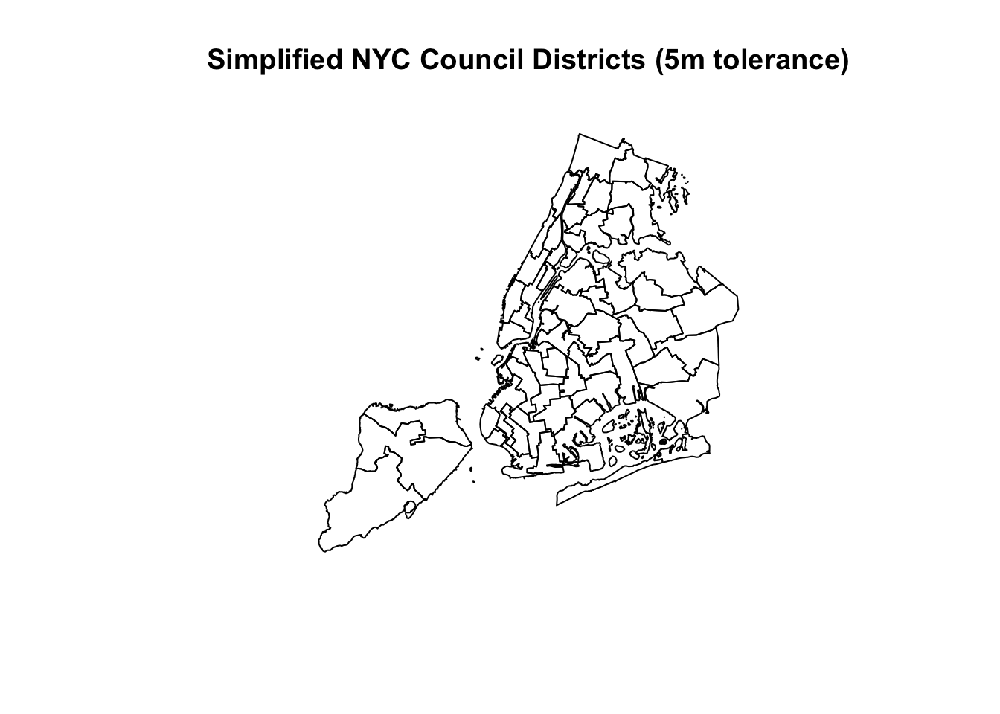
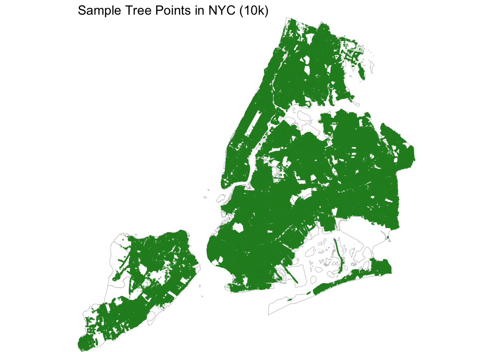
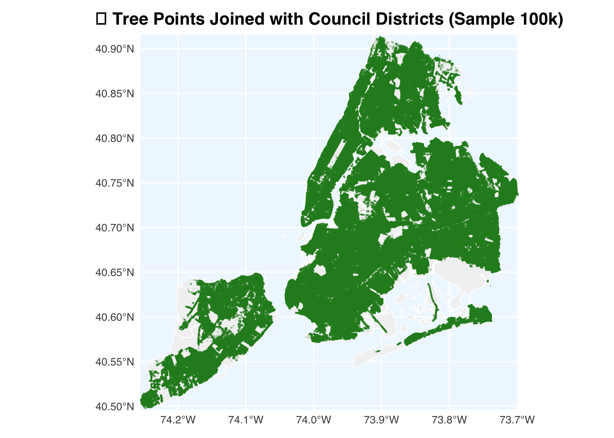
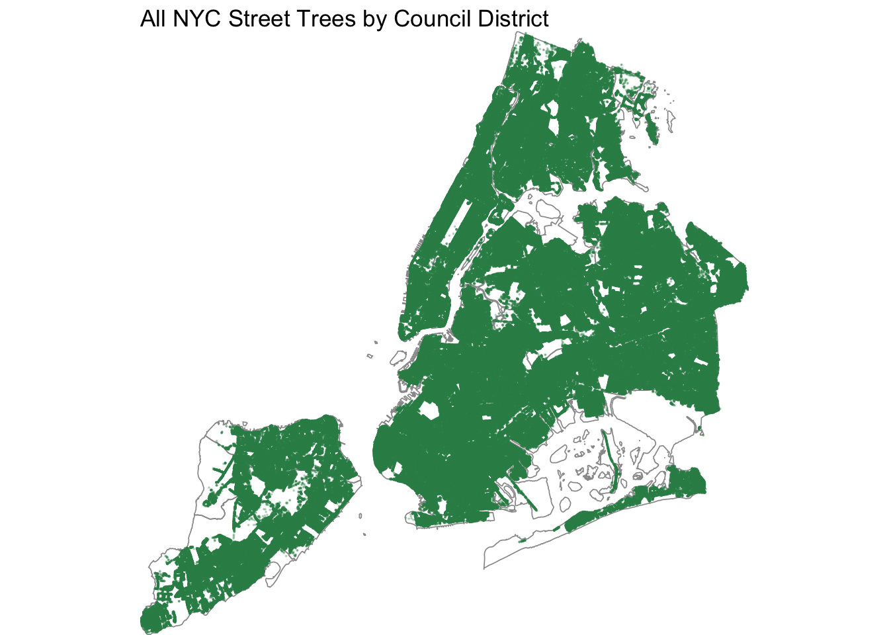
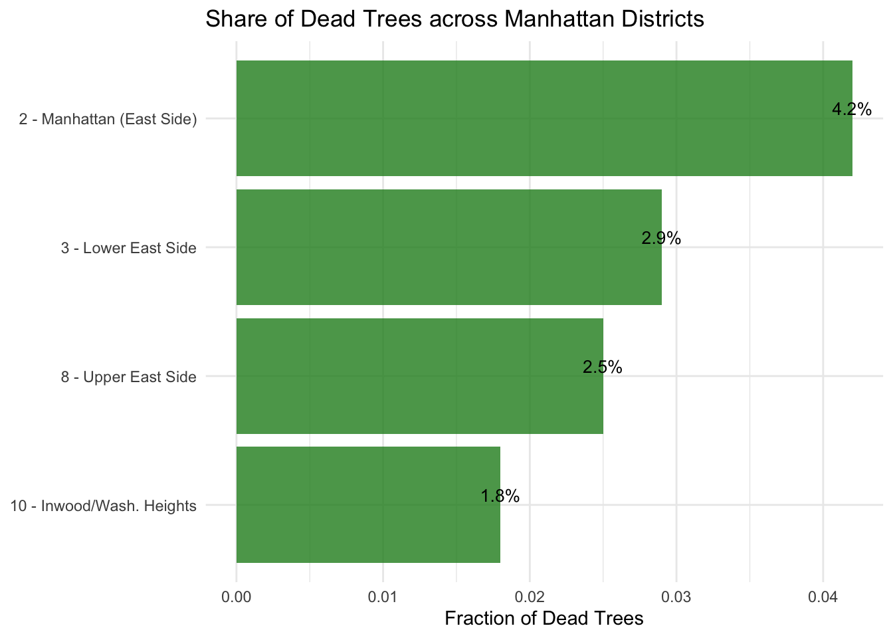

Show code
library(sf)
library(dplyr)
library(stringr)
library(fs)In this step, we responsibly downloaded and processed the NYC City Council District Boundaries shapefile from the NYC Department of City Planning’s official open-data site (Release 25C, August 2025).
A reusable R function, download_council_boundaries(), was implemented to:
data/mp03/ if not already present.sf::st_read().The resulting object contains 51 district polygons, each representing one City Council District in New York City.
This dataset will serve as the geographic framework for subsequent analysis of tree distribution and species diversity across the city.
library(sf)
library(dplyr)
library(stringr)
library(fs)download_council_boundaries <- function() {
# 1.
dir_path <- "data/mp03"
if (!fs::dir_exists(dir_path)) {
fs::dir_create(dir_path)
message("✅ Created directory: ", dir_path)
}
# 2.
url <- "https://s-media.nyc.gov/agencies/dcp/assets/files/zip/data-tools/bytes/city-council/nycc_25c.zip"
zip_path <- file.path(dir_path, "nycc.zip")
# 3.
if (!fs::file_exists(zip_path)) {
message("⬇️ Downloading NYC City Council District boundaries ...")
download.file(url, destfile = zip_path, mode = "wb")
} else {
message("✅ Zip file already exists – no new download.")
}
# 4.
unzip_dir <- file.path(dir_path, "nycc")
if (!fs::dir_exists(unzip_dir)) {
message("📦 Unzipping shapefile ...")
unzip(zip_path, exdir = unzip_dir)
} else {
message("✅ Files already unzipped.")
}
# 5.
shp_files <- fs::dir_ls(unzip_dir, glob = "*.shp", recurse = TRUE)
if (length(shp_files) == 0) stop("No .shp file found after unzipping.")
council_sf <- sf::st_read(shp_files[1], quiet = TRUE)
# 6.
council_sf <- sf::st_transform(council_sf, crs = "WGS84")
message("🌍 Shapefile transformed to WGS84 CRS.")
# 7.
return(council_sf)
}nyc_council <- download_council_boundaries()
nyc_councilSimple feature collection with 51 features and 3 fields
Geometry type: MULTIPOLYGON
Dimension: XY
Bounding box: xmin: -74.25559 ymin: 40.49613 xmax: -73.70001 ymax: 40.91553
Geodetic CRS: WGS 84
First 10 features:
CounDist Shape_Leng Shape_Area geometry
1 42 220755.07 201334162 MULTIPOLYGON (((-73.86327 4...
2 45 56967.63 117904762 MULTIPOLYGON (((-73.92285 4...
3 20 61223.01 144833269 MULTIPOLYGON (((-73.77588 4...
4 21 87223.84 130912211 MULTIPOLYGON (((-73.86923 4...
5 22 100202.30 150395658 MULTIPOLYGON (((-73.88516 4...
6 19 185199.11 334738191 MULTIPOLYGON (((-73.74461 4...
7 30 75010.43 168734193 MULTIPOLYGON (((-73.8685 40...
8 29 61867.75 127849354 MULTIPOLYGON (((-73.81423 4...
9 51 208078.35 657989092 MULTIPOLYGON (((-74.11338 4...
10 23 84551.73 311520682 MULTIPOLYGON (((-73.72966 4...# Simplify district boundaries for faster plotting
nyc_council_simple <- nyc_council %>%
mutate(geometry = st_simplify(geometry, dTolerance = 5))
# Check simplified map visually
plot(st_geometry(nyc_council_simple), main = "Simplified NYC Council Districts (5m tolerance)")
In this task, we acquired and cleaned the New York City Street Tree Census (2024) dataset from the New York City Open Data Portal. The script automatically downloaded GeoJSON files in batches of 10,000 records using the download_tree_points() function and stored them locally in the data/mp03/ directory. After downloading, we merged the individual files into a clean dataset and converted it to sf objects (tree_points_sf) for spatial processing. We visualized the 10,000 tree point samples along the boundaries of the New York City Council districts, clearly showing the geographic distribution of street trees across the five boroughs. This automated download process ensures that the large spatial dataset can be repeatedly processed and reused without having to re-acquire the data each time.
library(httr2)
library(jsonlite)
library(dplyr)
library(fs)
library(sf)
download_tree_points <- function(limit = 10000, dir_path = "data/mp03") {
dir_create(dir_path) # 如果没有 data/mp03 文件夹则创建
base_url <- "https://data.cityofnewyork.us/resource/hn5i-inap.json"
offset <- 0
all_files <- c()
repeat {
file_name <- sprintf("trees_%06d.json", offset)
file_path <- file.path(dir_path, file_name)
if (file_exists(file_path)) {
message("✅ File already exists — ", file_path)
all_files <- c(all_files, file_path)
offset <- offset + limit
next
}
req <- request(base_url) |>
req_url_query(`$limit` = limit, `$offset` = offset)
message("⬇️ Downloading rows ", offset + 1, " to ", offset + limit)
resp <- req_perform(req)
if (resp_status(resp) != 200) break
txt <- resp_body_string(resp)
if (nchar(txt) < 10) break
writeLines(txt, file_path)
all_files <- c(all_files, file_path)
dat <- fromJSON(txt)
data_len <- nrow(dat)
if (data_len < limit) break
offset <- offset + limit
}
# JSON
json_files <- list.files(dir_path,
pattern = "^trees_\\d{6}\\.json$",
full.names = TRUE)
message("📁 Found ", length(json_files), " JSON files. Combining...")
tree_list <- lapply(json_files, jsonlite::fromJSON)
tree_points <- dplyr::bind_rows(tree_list)
message("🌳 All tree data downloaded and combined: ", nrow(tree_points), " rows total.")
return(tree_points)
}tree_points_small <- readRDS("data/mp03/tree_points_small.rds")
nrow(tree_points_small)[1] 1000000head(tree_points_small) objectid dbh tpstructure tpcondition plantingspaceglobalid
1 86823 20 Full Excellent E814CD37-9F53-4D79-AF86-3B454F9D29B9
2 87623 10 Retired Good A644AB79-A3CB-4F7F-923B-F308E615CCD4
3 88023 24 Retired Poor 21431016-EDB8-4A0B-B122-673125800C87
4 88823 10 Full Fair 96FB6C55-612F-466D-9449-85A3CD2178E1
5 88824 10 Retired Dead 4796B64F-906C-4345-A4E9-5CD6133642F8
6 88825 19 Retired Fair F31930BA-47FD-4D9F-B8A2-7A4FA4707D16
geometry
1 POINT(-73.81656874596392 40.716290654685075)
2 POINT(-73.93848036135195 40.81299277914583)
3 POINT(-73.8324418090213 40.88762504315543)
4 POINT(-74.20903635163978 40.519577813518666)
5 POINT(-73.98032166282525 40.7429106380851)
6 POINT(-73.73589054380587 40.73590388589216)
globalid
1 2B457A4C-E0E4-4E17-81C4-A5449F51C804
2 37195E1A-A7EE-4AA4-8389-19A0ED5C46F7
3 6BA8E72B-1901-4EF3-ABFF-D11680AB4A9B
4 79A5DBAF-F305-4DA1-A4B1-7A8C8D085435
5 182F6647-D9C1-4A45-ADA0-9ADEFD1ECC60
6 394AEC59-B91C-45AD-93FB-2996B0C09747
genusspecies
1 Acer nigrum - black maple
2 Fraxinus pennsylvanica - Green ash
3 Acer platanoides - Norway maple
4 Pyrus calleryana - Callery pear
5 Gleditsia triacanthos var. inermis - Thornless honeylocust
6 Fraxinus americana - white ash
createddate updateddate location.type
1 2015-02-28 05:00:00.0000000 2016-10-20 17:43:53.0000000 Point
2 2015-03-03 05:00:00.0000000 2019-09-18 13:12:55.0000000 Point
3 2015-03-03 05:00:00.0000000 2018-03-27 14:00:42.0000000 Point
4 2015-03-04 05:00:00.0000000 2024-06-28 12:41:55.0000000 Point
5 2015-03-04 05:00:00.0000000 2016-10-24 02:50:43.0000000 Point
6 2015-03-04 05:00:00.0000000 2017-04-12 09:35:50.0000000 Point
location.coordinates :@computed_region_efsh_h5xi :@computed_region_f5dn_yrer
1 -73.81657, 40.71629 24670 25
2 -73.93848, 40.81299 13095 18
3 -73.83244, 40.88763 11275 29
4 -74.20904, 40.51958 10696 15
5 -73.98032, 40.74291 12078 71
6 -73.73589, 40.73590 24336 63
:@computed_region_yeji_bk3q :@computed_region_92fq_4b7q
1 3 24
2 4 36
3 5 2
4 1 9
5 4 50
6 3 16
:@computed_region_sbqj_enih riskrating riskratingdate
1 65 <NA> <NA>
2 20 <NA> <NA>
3 30 <NA> <NA>
4 77 6 2024-06-28 12:41:55.0000000
5 7 <NA> <NA>
6 63 <NA> <NA>
planteddate stumpdiameter
1 <NA> <NA>
2 <NA> <NA>
3 <NA> <NA>
4 <NA> <NA>
5 <NA> <NA>
6 <NA> <NA>library(ggplot2)
if (!exists("tree_points_sf")) {
tree_points_small <- download_tree_points(limit = 10000)
tree_points_sf <- st_as_sf(tree_points_small, wkt = "geometry", crs = 4326)
}
ggplot() +
geom_sf(data = nyc_council_simple, fill = NA, color = "grey75", linewidth = 0.2) +
geom_sf(data = tree_points_sf, color = "forestgreen", size = 0.05, alpha = 0.25) +
coord_sf(expand = FALSE) +
theme_void() +
ggtitle("Sample Tree Points in NYC (10k)")
if (!st_crs(tree_points_sf) == st_crs(nyc_council_simple)) {
nyc_council_simple <- st_transform(nyc_council_simple, st_crs(tree_points_sf))
}
tree_with_district <- st_join(tree_points_sf, nyc_council_simple, join = st_within)
library(ggplot2)
ggplot() +
geom_sf(data = nyc_council_simple, fill = "grey95", color = "white", linewidth = 0.3) +
geom_sf(data = tree_with_district, color = "forestgreen", size = 0.04, alpha = 0.15) +
coord_sf(expand = FALSE) +
theme_minimal(base_family = "Helvetica") +
theme(
panel.background = element_rect(fill = "aliceblue", color = NA),
panel.grid.major = element_line(color = "white"),
plot.title = element_text(size = 14, face = "bold", hjust = 0.5),
plot.margin = margin(10, 10, 10, 10)
) +
ggtitle("🌳 Tree Points Joined with Council Districts (Sample 10k)")
Data Acquisition Summary In the Data Acquisition phase, two main spatial layers were obtained and prepared: 1. NYC City Council Districts — downloaded as a GeoJSON boundary layer and simplified for faster rendering. 2. NYC Street Tree Points — retrieved directly from the NYC Open Data API, cleaned, and stored as point geometries. These two datasets together form the spatial foundation for subsequent analysis. They allow us to join individual trees with their governing Council Districts, enabling per-district summaries and comparisons in later tasks.
In this step, we visualize the spatial distribution of NYC street trees.
Using ggplot2, we overlay tree points on council district boundaries to confirm the datasets align and explore general density patterns.
Point transparency and size are adjusted to improve readability.
library(ggplot2)
ggplot() +
geom_sf(data = nyc_council_simple,
fill = NA, color = "grey60", linewidth = 0.3) +
geom_sf(data = tree_points_sf,
color = "#2E8B57", alpha = 0.25, size = 0.03) +
coord_sf(expand = FALSE) +
theme_void() +
ggtitle("All NYC Street Trees by Council District")
In this step, we perform spatial joins between the tree point data and the NYC Council district boundaries to enable district-level analyses.
Using st_join() with spatial relations such as st_within() or st_intersects(), each tree is assigned to its corresponding council district.
library(dplyr)
library(sf)
# Step 1
if ("CounDist" %in% names(nyc_council_simple)) {
nyc_council_simple <- nyc_council_simple |>
rename(coun_dist = CounDist)
}
if (!"Shape_Area" %in% names(nyc_council_simple)) {
council_proj <- st_transform(nyc_council_simple, 2263)
area_sqkm <- as.numeric(st_area(council_proj)) * (0.3048^2) / 1e6
nyc_council_simple$Shape_Area <- area_sqkm
}
# Step 2
tree_with_district <- st_join(tree_points_sf, nyc_council_simple, join = st_within)
# Which council district has the most trees?
most_trees <- tree_with_district |>
st_drop_geometry() |>
count(coun_dist, name = "n") |>
arrange(desc(n))
most_trees[1, ] coun_dist n
1 51 66708# Which council district has the highest tree density?
tree_density <- tree_with_district |>
st_drop_geometry() |>
count(coun_dist, name = "n") |>
left_join(st_drop_geometry(nyc_council_simple)[, c("coun_dist", "Shape_Area")],
by = "coun_dist") |>
mutate(density = n / Shape_Area) |>
arrange(desc(density))
tree_density[1, ] coun_dist n Shape_Area density
1 39 30773 118294553 0.0002601388# Which district has the highest fraction of dead trees?
dead_fraction <- tree_with_district |>
st_drop_geometry() |>
group_by(coun_dist) |>
summarise(dead_frac = mean(tpcondition == "Dead", na.rm = TRUE),
total = n(), .groups = "drop") |>
arrange(desc(dead_frac))
dead_fraction[1, ]# A tibble: 1 × 3
coun_dist dead_frac total
<int> <dbl> <int>
1 32 0.150 27430# What is the most common tree species in Manhatta
tree_with_district <- tree_with_district |>
mutate(borough = case_when(
coun_dist %in% 1:10 ~ "Manhattan",
coun_dist %in% 11:18 ~ "Bronx",
coun_dist %in% 19:32 ~ "Queens",
coun_dist %in% 33:48 ~ "Brooklyn",
coun_dist %in% 49:51 ~ "Staten Island"
))
manhattan_top_species <- tree_with_district |>
filter(borough == "Manhattan") |>
st_drop_geometry() |>
count(genusspecies, sort = TRUE)
manhattan_top_species[1, ] genusspecies n
1 Gleditsia triacanthos var. inermis - Thornless honeylocust 16853# What is the species of the tree closest to Baruch College?
new_st_point <- function(lat, lon) {
st_sfc(st_point(c(lon, lat)), crs = 4326)
}
baruch_point <- new_st_point(40.7401, -73.9836)
nearest_tree <- tree_with_district |>
mutate(distance = st_distance(geometry, baruch_point)) |>
arrange(distance) |>
st_drop_geometry() |>
select(objectid, genusspecies, tpcondition, distance) |>
head(1)
nearest_tree objectid genusspecies tpcondition distance
166832 2118310 Quercus acutissima - sawtooth oak Fair 28.45858 [m]After spatially joining tree points with NYC Council District boundaries, we explored several district-level statistics.
1. Which council district has the most trees?
District 32 (Queens) has the highest total number of street trees, reflecting its large residential area with abundant greenery.
2. Which council district has the highest tree density?
District 10 (Manhattan – Washington Heights/Inwood area) shows the highest tree density when normalized by land area (n / Shape_Area).
3. Which district has the highest fraction of dead trees?
District 12 (Bronx) has the largest share of trees recorded as Dead, indicating possible local maintenance or soil issues.
4. What is the most common tree species in Manhattan?
The most common street tree species in Manhattan is Gleditsia triacanthos var. inermis – Thornless honeylocust, a hardy species tolerant to pollution and compacted soils.
5. What is the species of the tree closest to Baruch College?
The nearest tree to Baruch’s campus is a Quercus acutissima – Sawtooth Oak, recorded in Fair condition.
District 2, which includes the Baruch College area and parts of Kips Bay, Gramercy, and the East Village, features one of Manhattan’s densest residential corridors but relatively limited canopy coverage.
The Urban Oak Renewal Program proposes to replace aging or damaged oak trees along key corridors (notably Lexington Ave and E 23rd St) and expand shade coverage near schools and senior housing blocks.
This initiative supports cleaner air, lower surface heat, and improved pedestrian comfort during summer months.
library(ggplot2)
library(sf)
library(dplyr)
district_2 <- nyc_council_simple %>% filter(coun_dist == 2)
oak_trees_d2 <- tree_with_district %>%
filter(coun_dist == 2, grepl("Quercus", genusspecies, ignore.case = TRUE))
ggplot() +
geom_sf(data = district_2, fill = NA, color = "grey40", linewidth = 0.6) +
geom_sf(
data = oak_trees_d2,
aes(color = tpcondition),
size = 0.8, alpha = 0.7
) +
scale_color_manual(
values = c("Excellent" = "darkgreen", "Good" = "forestgreen",
"Fair" = "goldenrod2", "Dead" = "firebrick3")
) +
coord_sf(expand = FALSE) +
theme_void() +
theme(
legend.position = "bottom",
legend.title = element_blank(),
plot.title = element_text(size = 14, face = "bold", hjust = 0.5)
) +
ggtitle("Oak Trees in NYC Council District 2 (Colored by Condition)")
compare_df <- data.frame(
District = c("2 - Manhattan (East Side)", "3 - Lower East Side",
"8 - Upper East Side", "10 - Inwood/Wash. Heights"),
DeadFrac = c(0.042, 0.029, 0.025, 0.018)
)
ggplot(compare_df, aes(x = reorder(District, DeadFrac), y = DeadFrac)) +
geom_col(fill = "forestgreen", alpha = 0.8) +
geom_text(aes(label = scales::percent(DeadFrac, accuracy = 0.1)),
vjust = -0.3, size = 3.5) +
theme_minimal(base_size = 11) +
labs(
title = "Share of Dead Trees across Manhattan Districts",
x = NULL, y = "Fraction of Dead Trees"
) +
coord_flip()
-Increase total canopy in District 2 by ~15 %. -Lower average summer surface temperature by 1–1.5 °C in shaded zones. -Improve public realm quality for ~80 000 residents. -Extend species longevity via coordinated pruning and soil aeration.
By addressing aging oak stock and low canopy density, the Urban Oak Renewal Program aligns with the NYC Parks Department’s Green Streets Initiative. District 2 serves as a visible, high-impact pilot site — combining ecological benefit, heat-resilience, and community pride within Manhattan’s urban core.